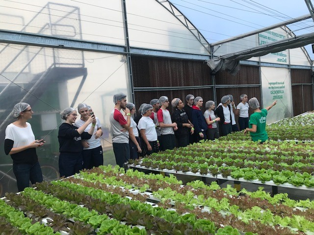
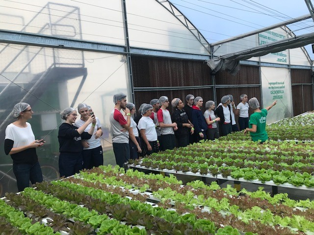

Horta Urbana Sustentável do iFood: Agricultura Orgânica e Doações para Combater a Fome
A horta urbana do iFood, localizada no terraço de sua sede em Osasco (SP), é um exemplo inovador de agricultura urbana. Em uma área de 950 m², são produzidas mensalmente 1,7 tonelada de alimentos orgânicos, parte dos quais é destinada ao refeitório da empresa e parte é doada para o Banco de Alimentos de Osasco, atendendo a mais de 3 mil famílias em situação de insegurança alimentar.
O projeto, realizado em parceria com a Begreen, utiliza técnicas avançadas de hidroponia, que reduzem significativamente o consumo de água e fertilizantes. Com estufa e sistema de climatização, a horta garante a proteção das plantas e uma produtividade até 28 vezes maior do que o cultivo convencional.
Este modelo de agricultura sustentável promove a redução do desperdício de alimentos, a diminuição da poluição e contribui para a segurança alimentar da comunidade local. Confira na galeria de fotos abaixo mais detalhes sobre essa iniciativa inspiradora.
 
